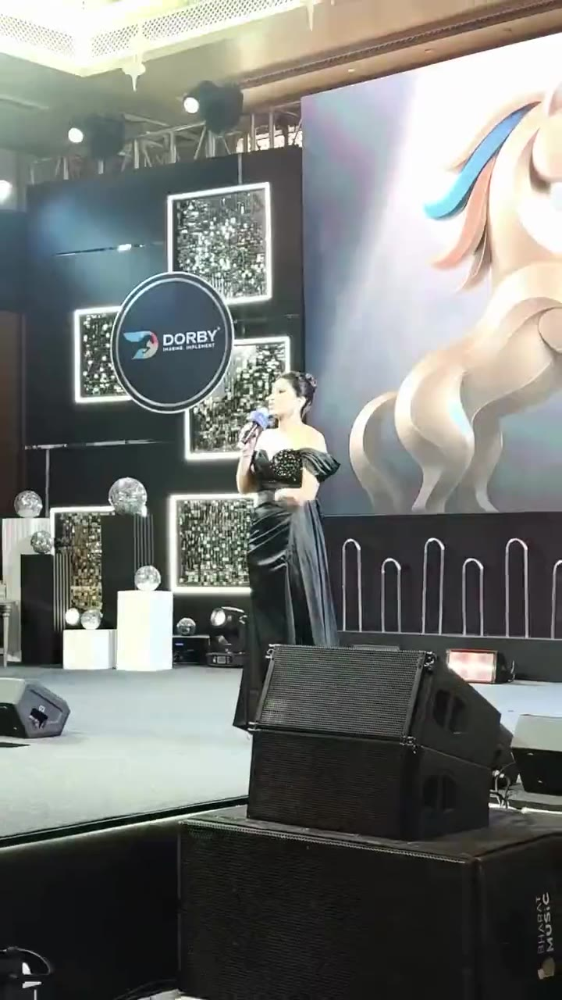
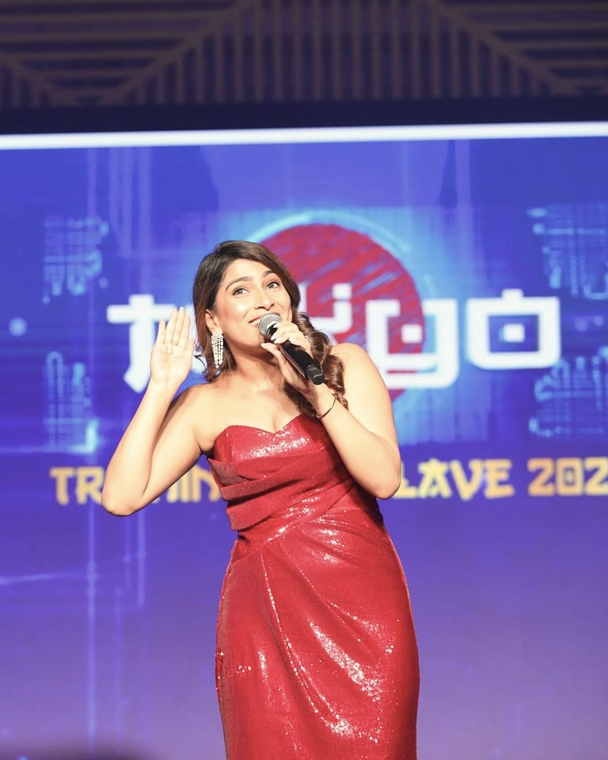

Press and hold a mic: she speaks while you hold, and freezes when you let go.
Still
Opening the room
Datamatics, Annual Achievers Awards · Mumbai
Length
0:11
Language
English
Transcript
Checked against her reel
Hold to hear her● Let go to freeze● Silent·let go for soundHold to hear the restHold to hear her again
0:11English
Press and hold. She speaks while you hold.Keep holding. Let go to freeze.Your phone needs one touch for sound. Let go, then hold again.Sound is on. Hold again to hear her.Sound is on. Now press and hold.Tap “or play” for sound, or tap the mic once more.
“Before anyone else, give yourselves the loudest round of applause for making it here this evening. You’re looking spectacular. Make some noise for yourselves. Come on.”
Still
Awards night
Himalaya, Himalaya Star Awards · Jaipur
Length
0:11
Language
English
Transcript
Draft, awaiting her approval
Draft transcript, awaiting her approval
Hold to hear her in Jaipur● Let go to freeze● Silent·let go for soundHold to hear the restHold to hear it again
0:11English
Press and hold. She speaks while you hold.Keep holding. Let go to freeze.Your phone needs one touch for sound. Let go, then hold again.Sound is on. Hold again to hear her.Sound is on. Now press and hold.Tap “or play” for sound, or tap the mic once more.

Still
In Hindi
Dorby, The Dorby Dialogue · Udaipur · 2026
Length
0:06
Language
Hindi
Transcript
Draft, with a draft translation, awaiting her approval
Draft transcript and translation, awaiting her approval
Hold to hear her in Hindi● Let go to freeze● Silent·let go for soundHold to hear the restHold to hear it again
0:06Hindi
Press and hold. She speaks while you hold.Keep holding. Let go to freeze.Your phone needs one touch for sound. Let go, then hold again.Sound is on. Hold again to hear her.Sound is on. Now press and hold.Tap “or play” for sound, or tap the mic once more.
Clean, high‑resolution masters with the room’s sound: To come from Nisha
Hear the clips with sound: the home page of this site

Conclave abroad TATA AIA Life, Tokyo Training Conclave · Tokyo · 2025
Bios, three lengths.
Drafts, awaiting her approval
Short about 25 words
Nisha Shetty is a presenter, anchor and emcee based in Mumbai. She hosts in English and Hindi, across India and abroad, and has worked full‑time since 2016.
Medium about 60 words
Nisha Shetty is a presenter, anchor and emcee based in Mumbai, hosting in English and Hindi. Full‑time since 2016, she hosts awards nights, conferences, partner meets, launches, red carpets and pageants, on stage, on camera and online. She works across India and abroad, alone or alongside a co‑host. HSBC, ICICI Prudential Life and Raychem RPG are among the clients who have asked her back.
Long about 120 words
Nisha Shetty is a presenter, anchor and emcee based in Mumbai. She hosts in English and Hindi, and has worked full‑time since 2016.
Her stages range from awards nights, conferences and partner meets to launches, pageants and the red carpet at the Jio Filmfare Awards 2018. She also hosts on camera and online, from NSE India’s “Investment Demystified” series to virtual awards for ICICI Prudential Life.
She works alone or alongside a co‑host, across India and abroad. Programmes since 2024 have taken her to Tokyo, Bali, Baku, Macao, Tbilisi, Colombo, Auckland and Queenstown, Ho Chi Minh City and Seoul. HSBC, ICICI Prudential Life and Raychem RPG are among the clients who have asked her back.
Before she walks on.
For the stage announcer. About 12 seconds, read aloud.
Draft, awaiting her approval
Ladies and gentlemen, welcome to event name.
Your host for the evening presents in English and Hindi, on stages across India and abroad.
Virtual awards and conferences, and on‑camera series such as NSE India’s “Investment Demystified”.
Preparation
Works from script cards on stage. What she needs from you before the day, and how she likes to be briefed: to come from Nisha
On the day
Baku, 2024: a conference, then a gala after a five‑minute changeover.
Travel
Across India and abroad.Seoul · Ho Chi Minh City · Auckland and Queenstown · Colombo · Bali · Tbilisi · Tokyo · Baku · MacaoTravel terms: to come from Nisha
Lead time
To come from Nisha
Tech needs
Mic, monitor and rehearsal needs: to come from Nisha